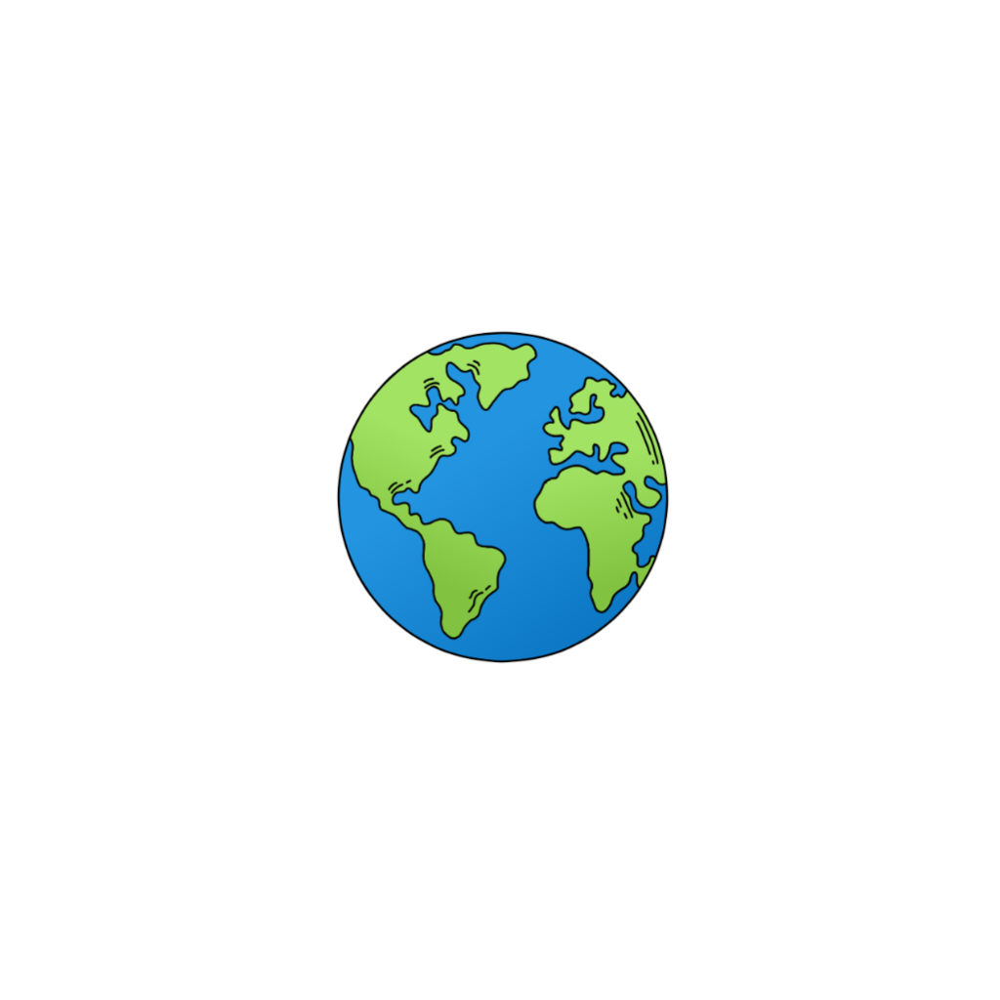

About K
Contact me, or give me some nuts :)
Dove trovare gli scoiattoli

Parc de la Pinède
Parco Nazionale della Foresta Nera
Parco Nazionale del Lago di Müritz
Parco Nazionale del Harz
Parco Nazionale di Yosemite
Parco Nazionale di Bryce Canyon
Parco Nazionale di Banff
Parco Nazionale del Pollino
Parco Nazionale del Cilento
Parco Nazionale del Gran Sasso e Monti della Laga
Parco Nazionale dello Stelvio
Parco Nazionale della Majella
Parco Nazionale delle Dolomiti Bellunesi
Parco Nazionale dei Monti Sibillini
Parco Nazionale del Vesuvio
Parco Nazionale dell'Aspromonte
Parco Nazionale delle Foreste Casentinesi, Monte Falterona e Campigna